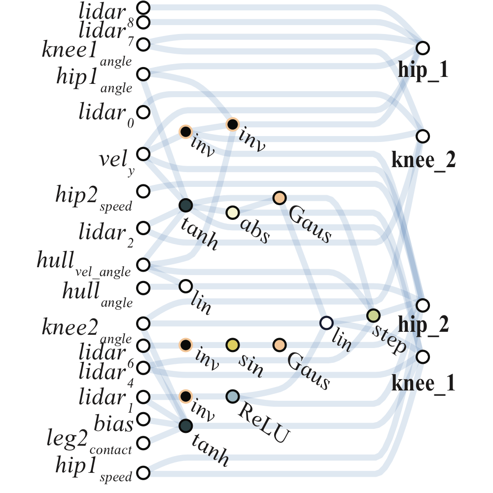
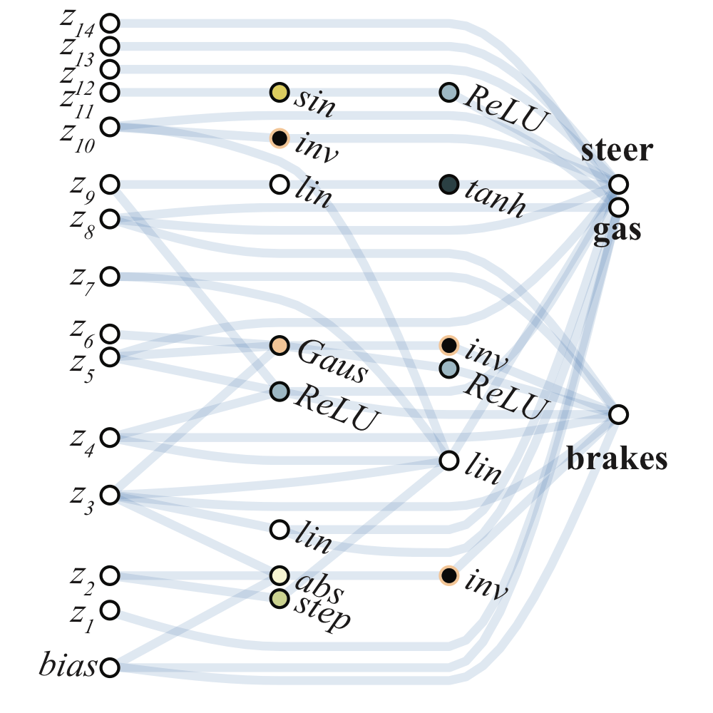
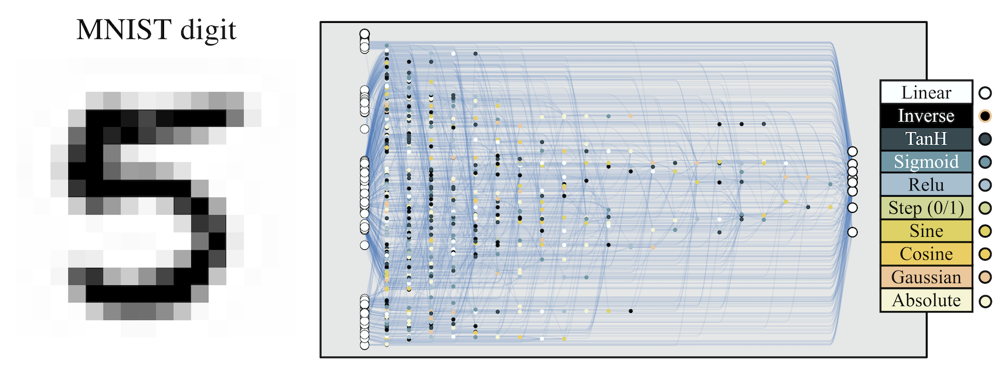
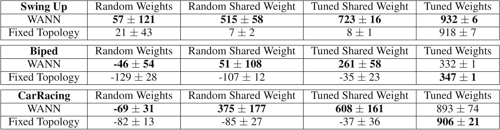
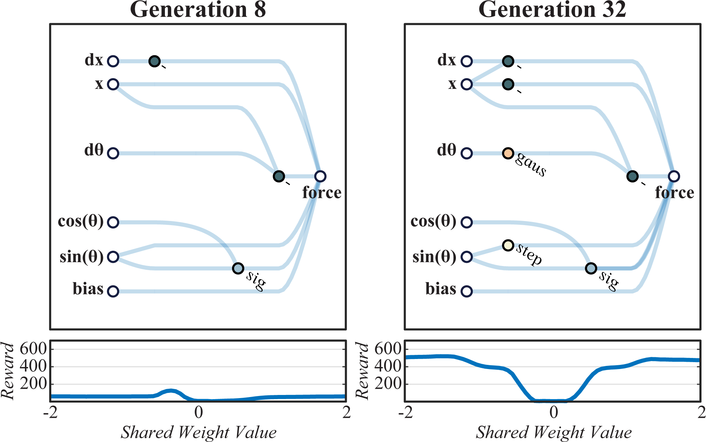
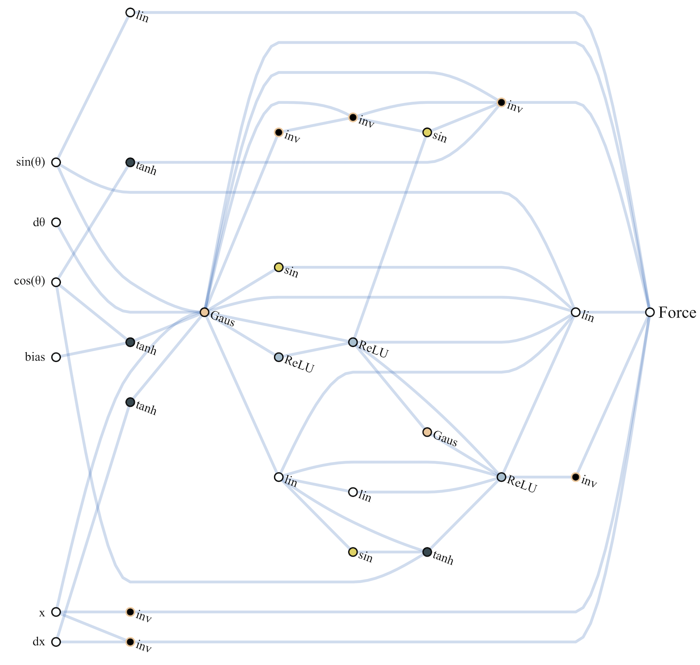
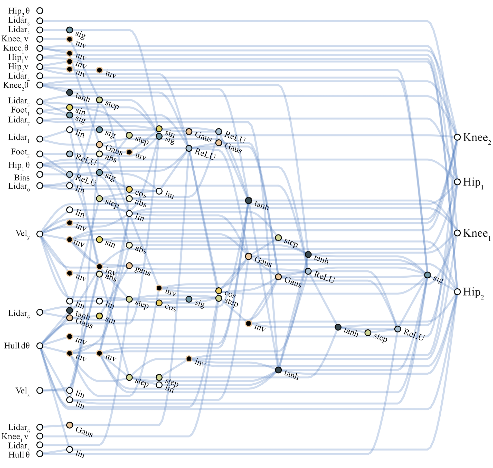
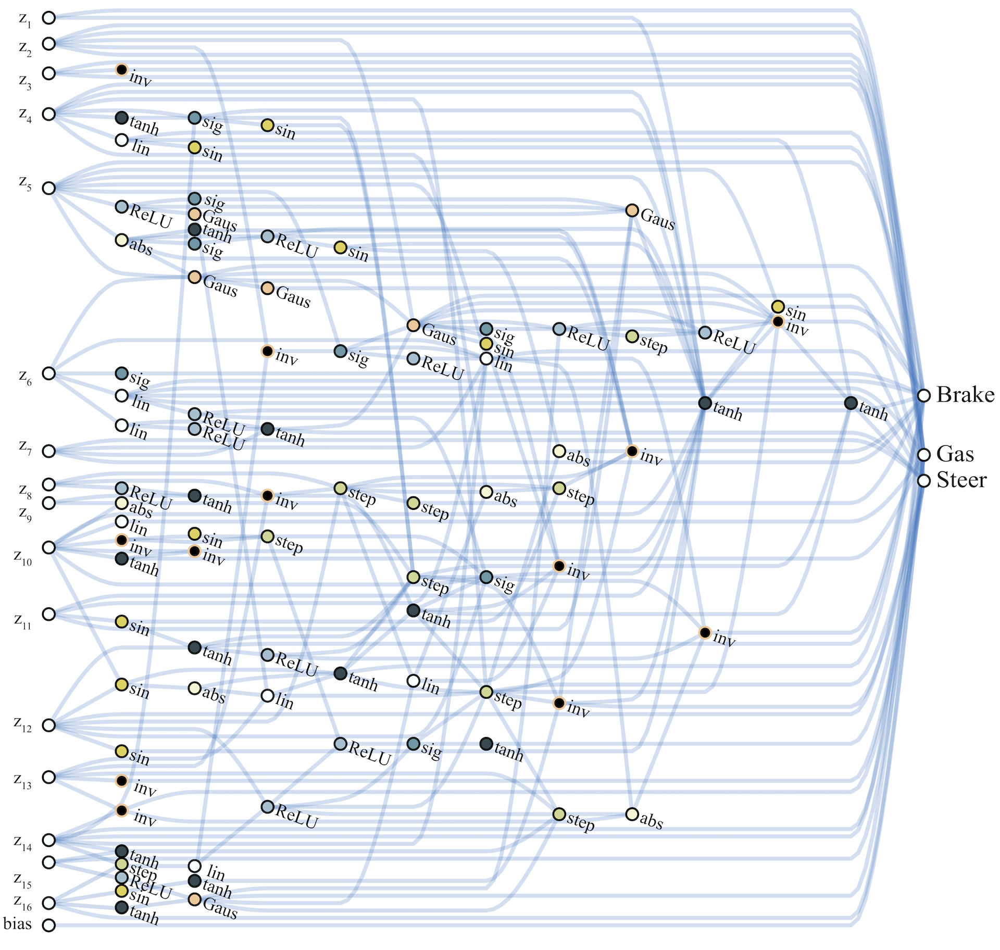
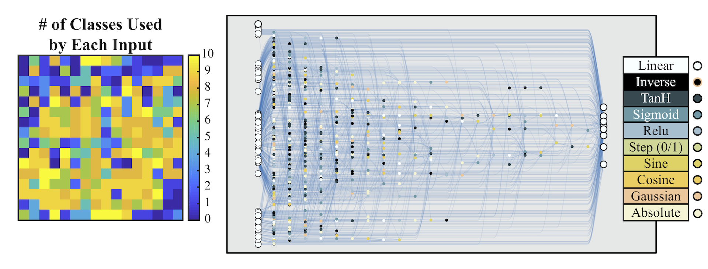

Weight Agnostic Neural Networks
Abstract
Not all neural network architectures are created equal, some perform much better than others for certain tasks. But how important are the weight parameters of a neural network compared to its architecture? In this work, we question to what extent neural network architectures alone, without learning any weight parameters, can encode solutions for a given task. We propose a search method for neural network architectures that can already perform a task without any explicit weight training. To evaluate these networks, we populate the connections with a single shared weight parameter sampled from a uniform random distribution, and measure the expected performance. We demonstrate that our method can find minimal neural network architectures that can perform several reinforcement learning tasks without weight training. On supervised learning domain, we find architectures that can achieve much higher than chance accuracy on MNIST using random weights.
Introduction
In biology, precocial species are those whose young already possess certain abilities from the moment of birth

We search for architectures by deemphasizing weights. In place of training, networks are assigned a single shared weight value at each rollout. Architectures that are optimized for expected performance over a wide range of weight values are still able to perform various tasks without weight training.
Decades of neural network research have provided building blocks with strong inductive biases for various task domains. Convolutional networks

Network architectures that already work with random weights are not only easily trainable, they also offer other advantages too. For instance, we can give the same network an ensemble of (untrained) weights to increase performance, without the need to explicitly train any weight parameters.
While a conventional network with random initialization will get ~ 10% accuracy on MNIST, this particular network architecture achieves a much better than chance accuracy on MNIST (> 80%) with random weights. Without any weight training, the accuracy increases to > 90% when we use an ensemble of untrained weights.
In order to find neural network architectures with strong inductive biases, we propose to search for architectures by deemphasizing the importance of weights. This is accomplished by (1) assigning a single shared weight parameter to every network connection and (2) evaluating the network on a wide range of this single weight parameter. In place of optimizing weights of a fixed network, we optimize instead for architectures that perform well over a wide range of weights. We demonstrate our approach can produce networks that can be expected to perform various continuous control tasks with a random weight parameter. As a proof of concept, we also apply our search method on a supervised learning domain, and find it can discover networks that, even without explicit weight training, can achieve a much higher than chance test accuracy of 92% on MNIST. We hope our demonstration of such weight agnostic neural networks will encourage further research exploring novel neural network building blocks that not only possess useful inductive biases, but can also learn using algorithms that are not necessarily limited to gradient-based methods.
Related Work
Our work has connections to existing work not only in deep learning, but also to various other fields:
Architecture Search Search algorithms for neural network topologies originated from the field of evolutionary computing in the 1990s
In order to achieve state-of-the-art results, recent methods narrow the search space to architectures composed of basic building blocks with strong domain priors such as CNNs
In addition, the inner loop for training the weights of each candidate architecture before evaluation makes neural architecture search computationally costly, although efforts have been made to improve efficiency
Bayesian Neural Networks The weight parameters of a BNN
Algorithmic Information Theory In AIT
While the aforementioned works focus on the information capacity required to represent the weights of a predefined network architecture, in this work we focus on finding minimal architectures that can represent solutions to various tasks. As our networks still require weights, we borrow ideas from AIT and BNN, and take them a bit further. Motivated by MDL, in our approach, we apply weight-sharing to the entire network and treat the weight as a random variable sampled from a fixed distribution.
Network Pruning By removing connections with small weight values from a trained neural network, pruning approaches
Network pruning is a complementary approach to ours; it starts with a full, trained network, and takes away connections, while in our approach, we start with no connections, and add complexity as needed. Compared to our approach, pruning requires prior training of the full network to obtain useful information about each weight in advance. In addition, the architectures produced by pruning are limited to the full network, while in our method there is no upper bound on the network's complexity.
Neuroscience A connectome
The connectome can be viewed as a graph
Weight Agnostic Neural Network Search
Creating network architectures which encode solutions is a fundamentally different problem than that addressed by neural architecture search (NAS). The goal of NAS techniques is to produce architectures which, once trained, outperform those designed by humans. It is never claimed that the solution is innate to the structure of the network. Networks created by NAS are exceedingly ‘trainable’ -- but no one supposes these networks will solve the task without training the weights. The weights are the solution; the found architectures merely a better substrate for the weights to inhabit.
To produce architectures that themselves encode solutions, the importance of weights must be minimized. Rather than judging networks by their performance with optimal weight values, we can instead measure their performance when their weight values are drawn from a random distribution. Replacing weight training with weight sampling ensures that performance is a product of the network topology alone. Unfortunately, due to the high dimensionality, reliable sampling of the weight space is infeasible for all but the simplest of networks. Though the curse of dimensionality prevents us from efficiently sampling high dimensional weight spaces, by enforcing weight-sharing on all weights, the number of weight values is reduced to one. Systematically sampling a single weight value is straight-forward and efficient, enabling us to approximate network performance in only a handful of trials. This approximation can then be used to drive the search for ever better architectures.

Weight Agnostic Neural Network Search avoids weight training while exploring the space of neural network topologies by sampling a single shared weight at each rollout. Networks are evaluated over several rollouts. At each rollout a value for the single shared weight is assigned and the cumulative reward over the trial is recorded. The population of networks is then ranked according to their performance and complexity. The highest ranking networks are then chosen probabilistically and varied randomly to form a new population, and the process repeats.
The search for these weight agnostic neural networks (WANNs) can be summarized as follows (See above figure for an overview):
1. An initial population of minimal neural network topologies is created.
2. Each network is evaluated over multiple rollouts, with a different shared weight value assigned at each rollout.
3. Networks are ranked according to their performance and complexity.
4. A new population is created by varying the highest ranked network topologies, chosen probabilistically through tournament selection
The algorithm then repeats from (2), yielding weight agnostic topologies of gradually increasing complexity that perform better over successive generations.
Topology Search The operators used to search for neural network topologies are inspired by the well-established neuroevolution algorithm NEAT

Left: A minimal network topology, with input and outputs only partially connected.
Middle: Networks are altered in one of three ways:
(1) Insert Node: a new node is inserted by splitting an existing connection.
(2) Add Connection: a new connection is added by connecting two previously unconnected nodes.
(3) Change Activation: the activation function of a hidden node is reassigned.
Right: Possible activation functions (linear, step, sin, cosine, Gaussian, tanh, sigmoid, inverse, absolute value, ReLU) shown over the range [2, 2].
The initial population is composed of sparsely connected networks, networks with no hidden nodes and only a fraction of the possible connections between input and output. New networks are created by modifying existing networks using one of three operators: insert node, add connection, or change activation (See figure above). To insert a node, we split an existing connection into two connections that pass through this new hidden node. The activation function of this new node is randomly assigned. New connections are added between previously unconnected nodes, respecting the feed-forward property of the network. When activation functions of hidden nodes are changed, they are assigned at random. Activation functions include both the common (e.g. linear, sigmoid, ReLU) and more exotic (Gaussian, sinusoid, step), encoding a variety of relationships between inputs and outputs.
Performance and Complexity Network topologies are evaluated using several shared weight values. At each rollout a new weight value is assigned to all connections, and the network is tested on the task. In these experiments we used a fixed series of weight values (-2, -1, -0.5, +0.5, +1, +2) to decrease the variance between evaluations.
Motivated by algorithmic information theory
Ranking networks in this way requires that any increase in complexity is accompanied by an increase in performance. While encouraging minimal and modular networks, this constraint can make larger structural changes -- which may require several additions before paying off -- difficult to achieve. To relax this constraint we rank by complexity only probabilistically: in 80% of cases networks are ranked according to mean performance and the number of connections, in the other 20% ranking is done by mean performance and max performance.
Experimental Results
Continuous Control Weight agnostic neural networks (WANNs) are evaluated on three continuous control tasks.
The first, CartPoleSwingUp, is a classic control problem where, given a cart-pole system, a pole must be swung from a resting to upright position and then balanced, without the cart going beyond the bounds of the track. The swingup task is more challenging than the simpler CartPole
The second task, BipedalWalker-v2
The third, CarRacing-v0
Hand-designed networks found in the literature
1. Random weights: individual weights drawn from .
2. Random shared weight: a single shared weight drawn from .
3. Tuned shared weight: the highest performing shared weight value in range .
4. Tuned weights: individual weights tuned using population-based REINFORCE

We compare the mean performance (over 100 trials) of the best weight agnostic network architectures found with standard feed forward network policies commonly used in previous work (i.e. we use SOTA baselines from
The results are summarized in the above table.
The best performing shared weight value produces satisfactory if not optimal behaviors: a balanced pole after a few swings, effective if inefficient gaits, wild driving behaviour that cuts corners. These basic behaviors are encoded entirely within the architecture of the network. And while WANNs are able to perform without training, this predisposition does not prevent them from reaching similar state-of-the-art performance when the weights are trained.

Generation 8: An early network which performs poorly with nearly all weights.
Generation 32: Relationships between the position of the cart and velocity of the pole are established. The tension between these relationships produces both centering and swing-up behavior.
Generation 128: Complexity is added to refine the balancing behavior of the elevated pole.
Generation 1024: Letting the evolution run for many more generations to further refine the architecture.
As the networks discovered are small enough to interpret, we can derive insights into how they function by looking at network diagrams (See above figure). Examining the development of a WANN which solves CartPoleSwingUp is also illustrative of how relationships are encoded within an architecture. In the earliest generations the space of networks is explored in an essentially random fashion. By generation 32, preliminary structures arise which allow for consistent performance: the three inverters applied to the position keep the cart from leaving the track. The center of the track is at , left is negative, right is positive. By applying positive force when the cart is in a negative position and vice versa a strong attractor towards the center of the track is encoded.

The interaction between the regulation of position and the Gaussian activation on is responsible for the swing-up behavior, also developed by generation 32. At the start of the trial the pole is stationary: the Gaussian activation of is 1 and force is applied. As the pole moves toward the edge the nodes connected to the input, which keep the cart in the center, begin sending an opposing force signal. The cart's progress toward the edge is slowed and the change in acceleration causes the pole to swing, increasing and so decreasing the signal that is pushing the cart toward the edge. This slow down causes further acceleration of the pole, setting in motion a feedback loop that results in the rapid dissipation of signal from . The resulting snap back of the cart towards the center causes the pole to swing up. As the pole falls and settles the same swing up behavior is repeated, and the controller is rewarded whenever the pole is upright.
We can easily train each individual weight connection of our network by using the best shared weight as a starting point and solving for the offsets from the shared weight parameter. We used population-based REINFORCE
To visualize the agent's performance outside of the training distribution, this demo uses more chaotic initial conditions than the original settings (in both the architecture search and individual fine-tuned training).
As the search process continues, some of these controllers linger in the upright position longer than others, and by generation 128, the lingering duration is long enough for the pole to be kept balanced. Though this more complicated balancing mechanism is less reliable under variable weights than the swing-up and centering behaviors, the more reliable behaviors ensure that the system recovers and tries again until a balanced state is found. Notably, as these networks encode relationships and rely on tension between systems set against each other, their behavior is consistent with a wide range of shared weight values.
WANN controllers for BipedalWalker-v2 and CarRacing-v0 are likewise remarkable in their simplicity and modularity. The biped controller uses only 17 of the 25 possible inputs, ignoring many LIDAR sensors and knee speeds. The best WANN architecture (below) not only solves the task without training the individual weights, but uses only 210 connections, an order of magnitude fewer than commonly used topologies (2804 connections used in the SOTA baseline

The architecture which encodes stable driving behavior in the car racer is also striking in its simplicity. Only a sparsely connected two layer network (below) and a single weight value is required to encode capable, but imperfect driving behavior.
While the SOTA baseline

Classification Promising results on reinforcement learning tasks lead us to consider how widely a WANN approach can be applied. WANNs which encode relationships between inputs are well suited to RL tasks: low-dimensional inputs coupled with internal states and environmental interaction allow discovery of reactive and adaptive controllers. Classification, however, is a far less fuzzy and forgiving problem. A problem where, unlike RL, design of architectures has long been a focus. As a proof of concept, we investigate how WANNs perform on the
| WANN | Test Accuracy |
|---|---|
| Random Weight | 82.0% 18.7% |
| Ensemble Weights | 91.6% |
| Tuned Weight | 91.9% |
| Trained Weights | 94.2% |
| ANN | Test Accuracy |
|---|---|
| Linear Regression | 91.6% |
| Two-Layer CNN | 99.3% |
WANNs instantiated with multiple weight values acting as an ensemble perform far better than when weights are sampled at random, and as well as a linear classifier with thousands of weights.
Even in this high-dimensional classification task WANNs perform remarkably well. Restricted to a single weight value, WANNs are able to classify MNIST digits as well as a single layer neural network with thousands of weights trained by gradient descent. The architectures created still maintain the flexibility to allow weight training, allowing further improvements in accuracy.

No single weight value has better accuracy on all digits. That WANNs can be instantiated as several different networks has intriguing possibilities for the creation of ensembles.
It is straight forward to sweep over the range of weights to find the value which performs best on the training set, but the structure of WANNs offers another intriguing possibility. At each weight value the prediction of a WANN is different. On MNIST this can be seen in the varied accuracy on each digit. Each weight value of the network can be thought of as a distinct classifier, creating the possibility of using a single WANN with multiple weight values as self-contained ensemble.

Not all neurons and connections are used to predict each digit. Starting from the output connection for a particular digit, we can map out the part of the network used to classify that digit. We can also see which parts of the inputs are used for classification.
In the simplest ensemble approach, a collection of networks are created by instantiating a WANN with a range of weight values. Each of these networks is given a single vote, and the ensemble classifies samples according to the category which received the most votes. This approach yields predictions far more accurate than randomly selected weight values, and only slightly worse than the best possible weight. That the result of this naive ensemble is successful is encouraging for experimenting with more sophisticated ensemble techniques when making predictions or searching for architectures.
Discussion and Future Work
In this work we introduced a method to search for simple neural network architectures with strong inductive biases for performing a given task. Since the networks are optimized to perform well using a single weight parameter over a range of values, this single parameter can easily be tuned to increase performance. Individual weight values can then be further tuned as offsets from the best shared weight. The ability to quickly fine-tune weights is useful in few-shot learning
We are also interested in WANNs that are able to perform multiple tasks. To develop a single WANN capable of encoding many different useful tasks in its environment, one might consider developing a WANN with a strong intrinsic bias for intrinsic motivation
While our approach learns network architectures of increasing complexity by adding connections, network pruning approaches find new architectures by their removal. It is also possible to learn a pruned network capable of performing additional tasks without learning weights
The success of deep learning is attributed to our ability to train the weights of large neural networks that consist of well-designed building blocks on large datasets, using gradient descent. While much progress has been made, there are also limitations, as we are confined to the space of architectures that gradient descent is able to train. For instance, effectively training models that rely on discrete components
That the networks found in this work do not match the performance of convolutional neural networks is not surprising. It would be an almost embarrassing achievement if they did. For decades CNN architectures have been refined by human scientists and engineers -- but it was not the reshuffling of existing structures which originally unlocked the capabilities of CNNs. Convolutional layers were themselves once novel building blocks, building blocks with strong biases toward vision tasks, whose discovery and application have been instrumental in the incredible progress made in deep learning. The computational resources available to the research community have grown significantly since the time convolutional neural networks were discovered. If we are devoting such resources to automated discovery and hope to achieve more than incremental improvements in network architectures, we believe it is also worth trying to discover new building blocks, not just their arrangements.
Finally, we see similar ideas circulating in the neuroscience community. A recent neuroscience commentary, “What artificial neural networks can learn from animal brains”
“The first lesson from neuroscience is that much of animal behavior is innate, and does not arise from learning. Animal brains are not the blank slates, equipped with a general purpose learning algorithm ready to learn anything, as envisioned by some AI researchers; there is strong selection pressure for animals to restrict their learning to just what is needed for their survival.”
This work is strongly motivated towards these goals of blending innate behavior and learning, and we believe it is a step towards addressing the challenge posed by Zador. We hope this article will help bring neuroscience and machine learning communities closer together to tackle these challenges.
If you would like to discuss any issues or give feedback, please visit the GitHub repository of this page for more information.